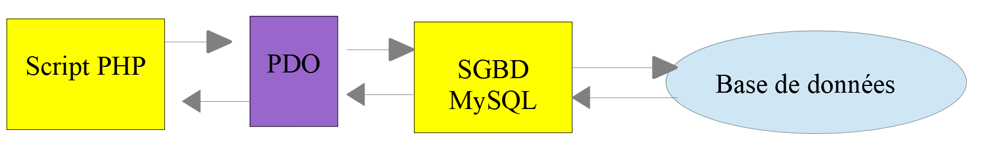
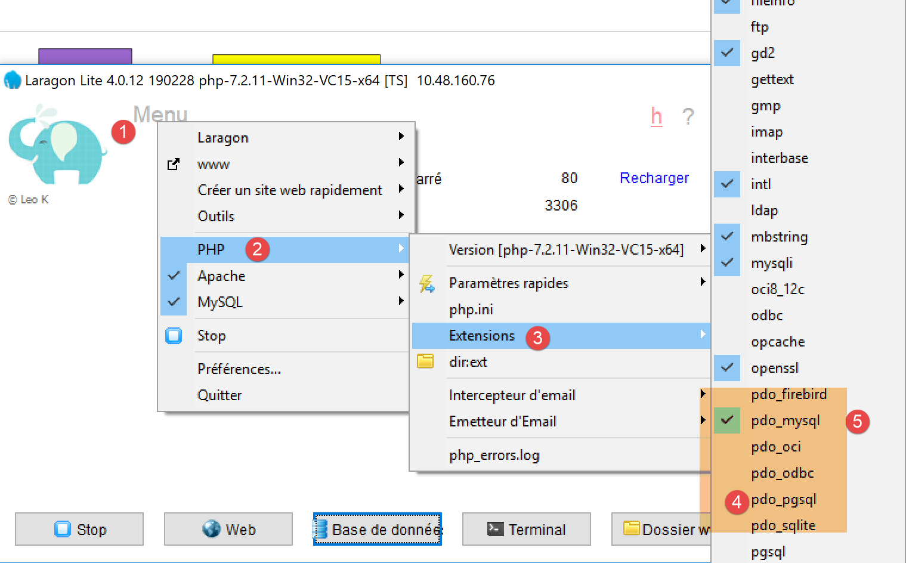

12. Utilizzo del DBMS MySQL

Ora scriveremo script PHP utilizzando un database MySQL:

Nell'architettura sopra riportata, lo script PHP (1) non comunica direttamente con il DBMS (Database Management System) (3). Comunica con un intermediario chiamato driver DBMS. PHP fornisce un'interfaccia standard per questi driver, l'interfaccia PDO (PHP Data Objects). Questa interfaccia è implementata da diverse classi su misura per ciascun DBMS: una classe per il DBMS MySQL, un'altra per il DBMS PostgreSQL… Per cambiare DBMS, cambiamo driver:

Il driver PDO isola lo script PHP (1) dal DBMS (3, 6). Poiché questi driver implementano un'interfaccia standard, ci si potrebbe aspettare che lo script PHP (1) rimanga invariato quando si passa dal DBMS MySQL (3) al DBMS PostgreSQL (6). In realtà, questo scenario ideale non esiste. Infatti, per comunicare con il DBMS, lo script PHP invia comandi SQL (Structured Query Language). Si tratta di un linguaggio implementato da tutti i DBMS, ma è incompleto. Di conseguenza, i DBMS vi hanno aggiunto comandi proprietari. Questa è una delle cause principali di incompatibilità tra i DBMS. Inoltre, i tipi di dati che possono essere utilizzati nei database possono differire da un DBMS all'altro. Ad esempio, PostgreSQL supporta una gamma di tipi di dati molto più ampia rispetto al DBMS MySQL. Questa è una seconda causa di incompatibilità. Un'altra causa è la gestione delle chiavi primarie automatiche (generate dal DBMS): praticamente ogni DBMS ha una propria politica. Ecc... Esistono numerose cause di incompatibilità.
Se si desidera evitare di riscrivere lo script PHP (1) quando si passa da MySQL (3) a PostgreSQL (6), in genere è necessario inserire un nuovo livello tra lo script PHP (1) e il driver PDO (2, 5), il cui ruolo sarà quello di risolvere le incompatibilità tra i due DBMS. Tuttavia, nei casi semplici che incontreremo, questo livello aggiuntivo non sarà necessario.
Ora useremo il DBMS MySQL. Questo è incluso nel pacchetto Laragon (vedi sezione link).
Se il lettore non ha familiarità con i concetti di database e SQL, potrebbe trovare utile il documento [http://sergetahe.com/cours-tutoriels-de-programmation/cours-tutoriel-sql-avec-le-sgbd-firebird/]. Questo documento utilizza il DBMS Firebird anziché MySQL, ma tratta i fondamenti dei database e dell'SQL. Come MySQL, Firebird offre una versione disponibile gratuitamente con un ingombro di memoria ridotto.
12.1. Creazione di un database
Ora vi mostreremo come creare un database e un utente MySQL utilizzando lo strumento Laragon.

- Una volta avviato, Laragon [1] può essere gestito da un menu [2];
- In [3-5], installare lo strumento di amministrazione di MySQL [phpMyAdmin] se non è già stato installato;

- In [6], avviare il server web Apache e il DBMS MySQL;
- In [7], il server Apache viene avviato;
- In [8], viene avviato il server di database MySQL;

- Nei passaggi [8-10], creare un database denominato [dbpersonnes] [11]. Creeremo un database di persone;

- in [11], gestiremo il database appena creato;

- L'operazione [Databases] invia una richiesta web all'URL [http://localhost/phpmyadmin]. Il server web Apache di Laragon risponde. L'URL [http://localhost/phpmyadmin] è l'URL dell'utilità [phpMyAdmin] che abbiamo installato in precedenza [5]. Questa utilità consente di gestire i database MySQL;
- per impostazione predefinita, le credenziali di accesso dell'amministratore del database sono: root [13] senza password [14];

- in [16], il database che abbiamo creato in precedenza;

- per ora, abbiamo un database [dbpersonnes] [17] che è vuoto [18];
Creiamo un utente [admpersonnes] con la password [nobody] che avrà privilegi completi sul database [dbpersonnes]:

- in [19], ci troviamo sul database [dbpersonnes];
- in [20], selezioniamo la scheda [Privilegi];
- nei paragrafi [21-22] si vede che l'utente [root] dispone di privilegi completi sul database [dbpersonnes];
- in [23], creiamo un nuovo utente;

- in [25-26], l'utente avrà il nome utente [admdbpersonnes];
- in [27-29], la sua password sarà [nobody];
- In [30], phpMyAdmin segnala che la password è molto debole (facile da violare). In un ambiente di produzione, è meglio generare una password forte utilizzando [31];
- In [32], si specifica che l'utente [admdbpersonnes] deve avere privilegi completi sul database [dbpersonnes];
- In [33], le informazioni fornite vengono convalidate;

- In [35], phpMyAdmin indica che l'utente è stato creato;
- In [36], la query SQL che è stata eseguita sul database;
- In [37], l'utente [admpersonnes] dispone di privilegi completi sul database [dbpersonnes];
Ora abbiamo:
- un database MySQL [dbpersonnes];
- un utente [admpersonnes/nobody] che ha pieno accesso a questo database;
Scriveremo script PHP per interagire con il database. PHP dispone di varie librerie per la gestione dei database. Useremo la libreria PDO (PHP Data Objects), che funge da intermediario tra il codice PHP e il DBMS:

La libreria PDO permette allo script PHP di astrarsi dalla natura esatta del DBMS utilizzato. Pertanto, come mostrato sopra, il DBMS MySQL può essere sostituito dal DBMS PostgreSQL con un impatto minimo sul codice dello script PHP. Questa libreria non è disponibile di default. È possibile verificarne la disponibilità come segue:

- In [1-4], controllare le estensioni PDO attive;
- in [5], è possibile vedere che l'estensione PDO per il DBMS MySQL è attiva. Le altre non lo sono. È sufficiente cliccarci sopra per attivarle;
Un altro modo per abilitare un'estensione è modificare direttamente il file [php.ini] (vedi link) che configura PHP:

- in [1], l'estensione PDO di MySQL è abilitata;
- In [2], l'estensione PDO per Firebird è disabilitata;
Dopo aver modificato il file [php.ini], è necessario riavviare PHP di Laragon affinché le modifiche abbiano effetto.
12.2. Connessione a un database MySQL
La connessione a un DBMS avviene creando un oggetto PDO. Il costruttore accetta vari parametri:
I parametri hanno i seguenti significati:
$dsn | (Data Source Name) è una stringa che specifica il tipo di DBMS e la sua posizione su Internet. La stringa "mysql:host=localhost" indica che abbiamo a che fare con un DBMS MySQL in esecuzione sul server locale. Questa stringa può includere altri parametri, come la porta di ascolto del DBMS e il nome del database a cui vogliamo connetterci: "mysql:host=localhost:port=3306:dbname=dbpersonnes"; |
$user | nome utente dell'utente che effettua l'accesso; |
$passwd | la sua password; |
$driver_options | un array di opzioni per il driver DBMS; |
È richiesto solo il primo parametro. L'oggetto così creato fungerà quindi da base per tutte le operazioni eseguite sul database a cui ci si è connessi. Se non è stato possibile creare l'oggetto PDO, viene generata un'eccezione PDOException.
Ecco un esempio di connessione [mysql-01.php]:
<?php
// connection to a local MySql database
// user identity is (admpersonnes,nobody)
const ID = "admpersonnes";
const PWD = "nobody";
const HOTE = "localhost";
try {
// connection
$dbh = new PDO("mysql:host=".HOTE, ID, PWD);
print "Connexion réussie\n";
// closing the connection
$dbh = NULL;
} catch (PDOException $e) {
print "Erreur : " . $e->getMessage() . "\n";
exit();
}
Risultati:
Commenti
- Riga 11: La connessione a un DBMS viene stabilita creando un oggetto PDO. Il costruttore viene utilizzato qui con i seguenti parametri:
- una stringa che specifica il tipo di DBMS e la sua posizione su Internet. La stringa "mysql:host=localhost" indica che si tratta di un DBMS MySQL in esecuzione sul server locale. La porta non è stata specificata; viene quindi utilizzata la porta 3306 per impostazione predefinita. Non è stato specificato nemmeno il nome del database. Verrà quindi stabilita una connessione al DBMS MySQL; la selezione di un database specifico dovrà essere effettuata in un secondo momento;
- un ID utente;
- la relativa password;
- riga 14: la connessione viene chiusa distruggendo l'oggetto PDO creato inizialmente;
- riga 15: la connessione a un DBMS potrebbe fallire. In questo caso, viene generata un'eccezione PDOException. Questa eccezione deriva dall'eccezione PHP [RuntimeException];
- riga 16: viene visualizzato il messaggio di errore dell'eccezione;
Rieseguiamo lo script inserendo una password errata alla riga 6. Il risultato è il seguente:
Erreur : SQLSTATE[HY000] [1045] Access denied for user 'admpersonnes'@'localhost' (using password: YES)
12.3. Creazione di una tabella
Lo script [mysql-02.php] mostra come creare una tabella in un database:
<?php
// database identity
const DSN = "mysql:host=localhost;dbname=dbpersonnes";
// user login
const ID = "admpersonnes";
const PWD = "nobody";
try {
// connection to the MySql database
$connexion = new PDO(DSN, ID, PWD);
// delete the people table if it exists
$sql = "drop table personnes";
$connexion->exec($sql);
// create people table
$sql = "create table personnes (prenom varchar(30) NOT NULL, nom varchar(30) NOT NULL, age integer NOT NULL, primary key(nom,prenom))";
$connexion->exec($sql);
} catch (PDOException $ex) {
// error display
print "Erreur : " . $ex->getMessage() . "\n";
} finally {
// disconnect if necessary
$connexion = NULL;
}
// end
print "Terminé\n";
exit;
Commenti
- riga 11: connessione al database. Questa è sempre la prima cosa da fare. Il risultato della connessione è un oggetto [PDO] attraverso il quale verranno eseguite le operazioni sul database;
- riga 13: l'istruzione SQL [drop table people] eliminerà la tabella [people] dal database [people_db]. Se la tabella [people] non esiste, ciò non causa un errore;
- riga 14: esecuzione dell'istruzione SQL precedente sul database [dbpersonnes]. Questa esecuzione potrebbe generare un'eccezione [PDOException], che verrà intercettata alla riga 18;
- Riga 16: questa istruzione SQL crea una tabella denominata [people]. Una tabella è composta da righe e colonne. Le colonne costituiscono quella che viene chiamata struttura della tabella. Le righe costituiscono il contenuto della tabella. Un database può contenere una o più tabelle. La tabella [people] avrà tre colonne:
- first_name: il nome di una persona come stringa di massimo 30 caratteri;
- last_name: il cognome della stessa persona come stringa di massimo 30 caratteri;
- age: l'età della persona come numero intero;
- L'attributo NOT NULL su una colonna richiede che la colonna abbia un valore. La mancata indicazione di un valore comporta un [PDOException];
- [primary key(last_name,first_name)] imposta una chiave primaria per la tabella [people]. Una chiave primaria ha un valore univoco per ogni riga della tabella. In questo caso, la chiave primaria si ottiene concatenando le colonne [last_name] e [first_name] della riga. Questo vincolo garantisce che la tabella non possa contenere due persone con lo stesso cognome e nome, ovvero due persone con lo stesso nome. La creazione di una voce duplicata per una persona nella tabella genera un'eccezione [PDOException];
- riga 17: esecuzione della query SQL sul database [dbpersonnes];
- riga 20: se si verifica una [PDOException], viene visualizzato il messaggio di errore associato;
- righe 21–24: inseriamo la clausola [finally] in tutti i casi, indipendentemente dal fatto che si verifichi o meno un'eccezione, per chiudere la connessione al database (riga 23);
Risultati:
Se lo script viene eseguito senza errori, la tabella è visibile in phpMyAdmin:


- in [3] il database;
- in [4], viene visualizzata la tabella;
- in [5], la struttura della tabella viene visualizzata nella scheda [Struttura];
- in [6-8], le tre colonne della tabella;
- in [9], nessuna delle tre colonne può essere vuota;

- in [10], l'elenco degli indici della tabella. Un indice consente di trovare le righe nella tabella con un indice specifico più velocemente rispetto a una scansione sequenziale delle righe della tabella. La chiave primaria fa sempre parte degli indici, ma un indice potrebbe non essere una chiave primaria;
- in [11], l'indice è la chiave primaria;
- in [12], l'indice è costituito dalle colonne [last_name, first_name] di ogni riga;
Ora, vediamo cosa succede se creiamo degli errori rispettivamente nel nome del database, nel nome utente e nella password:
Se inseriamo un nome di database inesistente:
Erreur : SQLSTATE[HY000] [1044] Access denied for user 'admpersonnes'@'%' to database 'dbpersonnes2'
Se inseriamo un nome utente inesistente:
Erreur : SQLSTATE[HY000] [1045] Access denied for user 'admpersonnes2'@'localhost' (using password: YES)
Se viene inserita una password errata:
Erreur : SQLSTATE[HY000] [1045] Access denied for user 'admpersonnes'@'localhost' (using password: YES)
12.4. Compilazione di una tabella
Scriveremo uno script PHP che esegue i comandi SQL presenti nel seguente file di testo [creation.txt]:
Commenti
- SQL (Structured Query Language) non fa distinzione tra maiuscole e minuscole nei comandi SQL;
- Riga 1: eliminiamo la tabella [people] se esiste;
- Riga 2: Indichiamo al server MySQL che invieremo caratteri codificati in UTF-8. Questo comando SQL specifico per MySQL è necessario in questo caso, ad esempio, per garantire che la "é" in Géraldine appaia correttamente nel database. Se omettiamo la riga 2, la "é" verrà convertita in una sequenza di due caratteri strani. Il client è lo script PHP scritto in NetBeans. Questo script codifica i file in UTF-8 [1-4] come mostrato di seguito:

- riga 3: creazione della tabella [people] con tre colonne (first_name, last_name, age) e la chiave primaria (last_name, first_name);
- righe 4–10: inserimento di 7 righe nella tabella [people];
- riga 6: questa istruzione di inserimento dovrebbe fallire perché tenta lo stesso inserimento della riga 5. Il vincolo della chiave primaria dovrebbe impedire questo inserimento: due persone non possono avere lo stesso nome e cognome;
- riga 10: questa istruzione di inserimento dovrebbe fallire perché tenta lo stesso inserimento della riga 9;
Lo script PHP incaricato di eseguire le istruzioni SQL contenute in questo file di testo è il seguente [mysql-03.php]:
<?php
// database identity
const DSN = "mysql:host=localhost;dbname=dbpersonnes";
// user login
const ID = "admpersonnes";
const PWD = "nobody";
// identity of the SQL command text file to be executed
const SQL_COMMANDS_FILENAME = "creation.txt";
// open database connection MySql
try {
$connexion = new PDO(DSN, ID, PWD);
} catch (PDOException $ex) {
// error display
print "Erreur : " . $ex->getMessage() . "\n";
exit;
}
// we want every SGBD error to trigger an exception
$connexion->setAttribute(PDO::ATTR_ERRMODE, PDO::ERRMODE_EXCEPTION);
// order file execution SQL
$erreurs = exécuterCommandes($connexion, SQL_COMMANDS_FILENAME, TRUE, FALSE);
// locking connection
$connexion = NULL;
//display number of errors
printf("\n-----------------------\nIl y a eu %d erreur(s)\n", count($erreurs));
for ($i = 0; $i < count($erreurs); $i++) {
print "$erreurs[$i]\n";
}
// it's over
print "Terminé\n";
exit;
// ---------------------------------------------------------------------------------
function exécuterCommandes(PDO $connexion, string $SQLFileName, bool $suivi = FALSE, bool $arrêt = TRUE): array {
// uses the $connexion connection
// executes the SQL commands contained in the SQLFileName text file
// this is a file of SQL commands to be executed one per line
// if $suivi=1 then each execution of a SQL order is displayed as a success or failure
// if $arrêt=1, the function stops on the 1st error encountered, otherwise it executes all sql commands
// the function returns an array (nb of errors, error1, error2...)
// check for the presence of the SQLFileName file
if (!file_exists($SQLFileName)) {
return ["Le fichier [$SQLFileName] n'existe pas"];
}
// execution of SQL queries contained in SQLFileName
// we put them in a table
$requêtes = file($SQLFileName);
// mistake?
if ($requêtes === FALSE) {
return ["Erreur lors de l'exploitation du fichier SQL [$SQLFileName]"];
}
// execute requests one by one - initially no errors
$erreurs = [];
$i = 0;
$fini = FALSE;
while ($i < count($requêtes) && !$fini) {
// retrieve the query text
// trim will remove the end-of-line marker
$requête = trim($requêtes[$i]);
// empty query?
if (strlen($requête) == 0) {
// ignore the request and move on to the next request
$i++;
continue;
}
try {
// query execution - an exception may be thrown
$connexion->exec($requête);
// screen tracking or not?
if ($suivi) {
print "$requête : Exécution réussie\n";
}
} catch (PDOException $ex) {
// an error has occurred
addError($erreurs, $requête, $ex->getMessage(), $suivi);
// shall we stop?
$fini = $arrêt;
}
// following request
$i++;
}
// result
return $erreurs;
}
function addError(array &$erreurs, string $requête, string $msg, bool $suivi): void {
// add an error msg
$msg = "$requête : Erreur (" . $msg . ")";
$erreurs[] = $msg;
// screen tracking or not?
if ($suivi) {
print "$msg\n";
}
}
Commenti
- La funzione [executeCommands] (righe 36–89) è responsabile dell'esecuzione dei comandi SQL presenti nel file di testo [$SQLFileName] (parametro 2). Per eseguirli, utilizza la connessione aperta [$connection] (parametro 1) al server MySQL. Il terzo parametro [$log] è un valore booleano che controlla l'output sullo schermo: se TRUE, l'istruzione SQL eseguita viene visualizzata sullo schermo insieme al suo successo o fallimento; altrimenti, l'esecuzione dell'istruzione SQL avviene in modo silenzioso. Il quarto parametro [$stop] controlla cosa fare quando un comando SQL fallisce: se TRUE, indica che l'esecuzione dei comandi SQL deve interrompersi; altrimenti, continua. La funzione [executeCommands] restituisce un array di messaggi di errore, vuoto se non ci sono stati errori;
- righe 11–18: apriamo la connessione al database MySQL [dbpersonnes]. Se l'apertura della connessione fallisce, viene visualizzato un messaggio di errore e il processo si interrompe (righe 14–18);
- riga 22: passiamo quindi una connessione aperta alla funzione [executeCommands]. Verrà chiusa quando la funzione restituirà il risultato (riga 24);
- Riga 20: prima di passare il tutto alla funzione [executeCommands], viene configurata la connessione. In caso di errore, le operazioni SQL con un oggetto [PDO] possono restituire il valore booleano FALSE (valore predefinito) oppure generare un'eccezione. La riga 20 opta per la seconda opzione. Infatti, è facile "dimenticarsi" di verificare il risultato booleano dell'esecuzione di un comando SQL. Questo finirà per causare un errore in un altro punto del codice, rendendo più difficile risalire alla fonte originale. Nel caso di un'eccezione non gestita (nessun blocco catch), l'eccezione si propagherà lungo la catena del codice fino a quando non incontrerà un blocco catch o raggiungerà l'interprete PHP, che intercetterà l'eccezione. In questo caso, vengono visualizzati la natura dell'eccezione e la sua origine nel codice;
- riga 22: viene chiamata la funzione [executeCommands] per eseguire il file di comandi SQL [$SQLFileName];
- righe 45–47: verifichiamo che il file di comandi SQL esista effettivamente. In caso contrario, registriamo l'errore e restituiamo questo risultato;
- riga 51: i comandi SQL vengono inseriti in un array [$queries]. Righe 53–55: se l'operazione fallisce, viene restituito un array di errori contenente un singolo messaggio;
- riga 57: accumuliamo gli errori nell'array [$errors];
- riga 58: numero della query;
- riga 59: il valore booleano [$finished] controlla l'esecuzione delle istruzioni SQL nell'array [$queries]. Quando diventa TRUE, l'esecuzione si interrompe;
- riga 60: eseguiamo un ciclo su tutte le query;
- riga 63: estraiamo il testo del comando SQL #i. La funzione [trim] rimuove gli spazi prima e dopo il testo del comando SQL. Per “spazi” intendiamo il carattere spazio \b, il ritorno a capo \r, l’avanzamento riga \n, l’avanzamento pagina \f, il tabulatore \t… Ciò che conta qui è che l’avanzamento riga nel testo SQL verrà rimosso;
- righe 65–69: se il testo SQL è vuoto, la query viene ignorata e si passa a quella successiva;
- riga 72: inviamo il comando SQL al server MySQL. Il metodo [PDO::exec] genererà un'eccezione se l'esecuzione fallisce. Si noti che questo comportamento è dovuto alla configurazione impostata alla riga 20;
- riga 79: il messaggio di errore viene aggiunto all'array degli errori;
- riga 81: viene impostato il valore booleano [$fini] che controlla il ciclo. Se il parametro [$arrêt] (riga 36) è TRUE, il ciclo deve essere interrotto;
- righe 74–76: se l'istruzione SQL è stata eseguita con successo, viene visualizzata sullo schermo se il parametro [$tracking] (riga 36) è TRUE;
- Riga 87: una volta che tutte le istruzioni SQL sono state eseguite, viene restituito l'array degli errori [$errors];
La funzione [adError] nelle righe 90–97 consente di aggiungere un errore all'array degli errori [$errors]:
- riga 90: la funzione accetta 4 parametri:
- il parametro [$errors] viene passato per riferimento. Questo perché vogliamo modificare l'array passato come parametro, non una sua copia;
- il parametro [$query] è il testo SQL dell'istruzione che ha dato errore;
- il parametro [$msg] è il messaggio di errore associato alla query fallita;
- il booleano [$log] indica se il messaggio di errore deve essere visualizzato ($log=TRUE) o meno ($log=FALSE) sulla console;
La funzione [executeCommands] viene chiamata dallo script nelle righe 3–33:
- righe 11–18: viene stabilita una connessione con il database MySQL [dbpersonnes];
- riga 20: la connessione viene configurata;
- riga 22: viene quindi eseguito il file di comandi SQL;
- riga 24: la connessione viene chiusa;
- Righe 26–29: visualizza gli errori restituiti dalla funzione [executeCommands];
Output sullo schermo:
drop table if exists personnes : Exécution réussie
SET NAMES 'utf8' : Exécution réussie
create table personnes (prenom varchar(30) not null, nom varchar(30) not null, age integer not null, primary key (nom,prenom)) : Exécution réussie
insert into personnes (prenom, nom, age) values('Paul','Langevin',48) : Exécution réussie
insert into personnes (prenom, nom, age) values ('Sylvie','Lefur',70) : Exécution réussie
insert into personnes (prenom, nom, age) values ('Sylvie','Lefur',70) : Erreur (SQLSTATE[23000]: Integrity constraint violation: 1062 Duplicate entry 'Lefur-Sylvie' for key 'PRIMARY')
insert into personnes (prenom, nom, age) values ('Pierre','Nicazou',35) : Exécution réussie
insert into personnes (prenom, nom, age) values ('Géraldine','Colou',26) : Exécution réussie
insert into personnes (prenom, nom, age) values ('Paulette','Girond',56) : Exécution réussie
insert into personnes (prenom, nom, age) values ('Paulette','Girond',56) : Erreur (SQLSTATE[23000]: Integrity constraint violation: 1062 Duplicate entry 'Girond-Paulette' for key 'PRIMARY')
-----------------------
Il y a eu 2 erreur(s)
insert into personnes (prenom, nom, age) values ('Sylvie','Lefur',70) : Erreur (SQLSTATE[23000]: Integrity constraint violation: 1062 Duplicate entry 'Lefur-Sylvie' for key 'PRIMARY')
insert into personnes (prenom, nom, age) values ('Paulette','Girond',56) : Erreur (SQLSTATE[23000]: Integrity constraint violation: 1062 Duplicate entry 'Girond-Paulette' for key 'PRIMARY')
Terminé
I record inseriti sono visibili in phpMyAdmin:

12.5. Esecuzione di istruzioni SQL arbitrarie
Lo script seguente mostra l'esecuzione di istruzioni SQL dal seguente file di testo [sql.txt]:
Tra queste istruzioni SQL, c'è l'istruzione SELECT, che restituisce risultati dal database; le istruzioni INSERT, UPDATE e DELETE, che modificano il database senza restituire risultati; e infine, istruzioni non valide come l'ultima (xselect). Lo script [mysql-04.php] è il seguente:
<?php
// database identity
const DSN = "mysql:host=localhost;dbname=dbpersonnes";
// user login
const ID = "admpersonnes";
const PWD = "nobody";
// identity of the SQL command text file to be executed
const SQL_COMMANDS_FILENAME = "sql.txt";
try {
// connection to the MySql database
$connexion = new PDO(DSN, ID, PWD);
} catch (PDOException $ex) {
// error display
print "Erreur : " . $ex->getMessage() . "\n";
exit;
}
// we want every SGBD error to trigger an exception
$connexion->setAttribute(PDO::ATTR_ERRMODE, PDO::ERRMODE_EXCEPTION);
// order file execution SQL
$erreurs = exécuterCommandes($connexion, SQL_COMMANDS_FILENAME, TRUE, FALSE);
// locking connection
$connexion = NULL;
//display number of errors
printf("\n-----------------------\nIl y a eu %d erreur(s)\n", count($erreurs));
for ($i = 0; $i < count($erreurs); $i++) {
print "$erreurs[$i]\n";
}
// it's over
print "Terminé\n";
exit;
// ---------------------------------------------------------------------------------
function exécuterCommandes(PDO $connexion, string $SQLFileName, bool $suivi = FALSE, bool $arrêt = TRUE): array {
………………………………………………………….
// execute requests one by one - initially no errors
$erreurs = [];
$i = 0;
$fini = FALSE;
while ($i < count($requêtes) && !$fini) {
// retrieve the query text
// trim will remove the end-of-line marker
$requête = trim($requêtes[$i]);
// empty query?
if (strlen($requête) == 0) {
// ignore the request and move on to the next request
$i++;
continue;
}
// query execution
// we retrieve its name
$commande = "";
if (preg_match("/^\s*(\S+)/", $requête, $champs)) {
$commande = strtolower($champs[0]);
}
try {
// is this a SELECT order?
if ($commande === "select") {
$résultat = $connexion->query($requête);
} else {
$résultat = $connexion->exec($requête);
}
// screen tracking or not?
if ($suivi) {
print "[$requête] : Exécution réussie\n";
}
// the result of execution is displayed
afficherInfos($commande, $résultat);
} catch (PDOException $ex) {
// an error has occurred
addError($erreurs, $requête, $ex->getMessage(), $suivi);
// shall we stop?
$fini = $arrêt;
}
// following request
$i++;
}
// result
return $erreurs;
}
function addError(array &$erreurs, string $requête, string $msg, bool $suivi): void {
…
}
// ---------------------------------------------------------------------------------
function afficherInfos(string $commande, $résultat): void {
// displays the $résultat result of an sql query
// was it a select?
switch ($commande) {
case "select" :
// displays field names
$titre = "";
$nbColonnes = $résultat->columnCount();
for ($i = 0; $i < $nbColonnes; $i++) {
$infos = $résultat->getColumnMeta($i);
$titre .= $infos['name'] . ",";
}
// remove the last character ,
$titre = substr($titre, 0, strlen($titre) - 1);
// displays the list of fields
print "$titre\n";
// dividing line
$séparateurs = "";
for ($i = 0; $i < strlen($titre); $i++) {
$séparateurs .= "-";
}
print "$séparateurs\n";
// data
foreach ($résultat as $ligne) {
$data = "";
for ($i = 0; $i < $nbColonnes; $i++) {
$data .= $ligne[$i] . ",";
}
// remove the last character ,
$data = substr($data, 0, strlen($data) - 1);
// we display
print "$data\n";
}
break;
case "update":
case "insert":
case "delete";
print " $résultat lignes(s) a (ont) été modifiée(s)\n";
break;
}
}
Commenti
- righe 36–83: la funzione [executeCommands] è leggermente modificata: il comando SQL [select] non viene eseguito allo stesso modo degli altri comandi SQL. Questo comando è l'unico che restituisce una tabella come risultato, ovvero un insieme di righe e colonne dal database;
- righe 55–57: estraiamo la prima parola dell'istruzione SQL utilizzando un'espressione regolare;
- righe 60–64: se il comando SQL è [select], viene utilizzato il metodo [PDO::query]; altrimenti, viene utilizzato il metodo [PDO::exec] per eseguire il comando SQL. In entrambi i casi, se l'esecuzione fallisce, viene generata un'eccezione che viene intercettata nelle righe 71–77. Se l'esecuzione ha esito positivo, la riga 70 visualizza il risultato;
- righe 90–130: la funzione displayInfo visualizza le informazioni relative al risultato dell'esecuzione di un comando SQL;
- riga 94: gestiamo il caso [select]. Il suo risultato è un oggetto di tipo [PDOStatement];
- riga 96: il metodo [PDOStatement::getColumnCount()] restituisce il numero di colonne nella tabella dei risultati del select;
- righe 98–99: il metodo [PDOStatement::getMeta(i)] restituisce un dizionario di informazioni relative alla colonna i della tabella dei risultati del SELECT. In questo dizionario, il valore associato alla chiave 'name' è il nome della colonna;
- righe 97–102: i nomi delle colonne nella tabella dei risultati dell'istruzione SELECT vengono concatenati in una stringa;
- righe 105-110: viene costruita una riga di separazione della stessa lunghezza della stringa costruita in precedenza;
- righe 112–121: un oggetto PDOStatement può essere iterato utilizzando un ciclo foreach. Ad ogni iterazione, l'elemento restituito è una riga della tabella dei risultati SELECT sotto forma di un array di valori che rappresentano i valori delle varie colonne della riga. Tutti questi valori vengono visualizzati utilizzando un ciclo for (righe 114–116);
- righe 123–127: il risultato dell'esecuzione di un'istruzione insert, update o delete è il numero di righe modificate dall'istruzione;
Risultati dello schermo:
[set names 'utf8'] : Exécution réussie
[select * from personnes] : Exécution réussie
prenom,nom,age
--------------
Géraldine,Colou,26
Paulette,Girond,56
Paul,Langevin,48
Sylvie,Lefur,70
Pierre,Nicazou,35
[select nom,prenom from personnes order by nom asc, prenom desc] : Exécution réussie
nom,prenom
----------
Colou,Géraldine
Girond,Paulette
Langevin,Paul
Lefur,Sylvie
Nicazou,Pierre
[select * from personnes where age between 20 and 40 order by age desc, nom asc, prenom asc] : Exécution réussie
prenom,nom,age
--------------
Pierre,Nicazou,35
Géraldine,Colou,26
[insert into personnes values('Josette','Bruneau',46)] : Exécution réussie
1 lignes(s) a (ont) été modifiée(s)
[update personnes set age=47 where nom='Bruneau'] : Exécution réussie
1 lignes(s) a (ont) été modifiée(s)
[select * from personnes where nom='Bruneau'] : Exécution réussie
prenom,nom,age
--------------
Josette,Bruneau,47
[delete from personnes where nom='Bruneau'] : Exécution réussie
1 lignes(s) a (ont) été modifiée(s)
[select * from personnes where nom='Bruneau'] : Exécution réussie
prenom,nom,age
--------------
[insert into personnes values('Josette','Bruneau',46)] : Exécution réussie
1 lignes(s) a (ont) été modifiée(s)
[xselect * from personnes where nom='Bruneau'] : Erreur (SQLSTATE[42000]: Syntax error or access violation: 1064 You have an error in your SQL syntax; check the manual that corresponds to your MySQL server version for the right syntax to use near 'xselect * from personnes where nom='Bruneau'' at line 1)
-----------------------
Il y a eu 1 erreur(s)
[xselect * from personnes where nom='Bruneau'] : Erreur (SQLSTATE[42000]: Syntax error or access violation: 1064 You have an error in your SQL syntax; check the manual that corresponds to your MySQL server version for the right syntax to use near 'xselect * from personnes where nom='Bruneau'' at line 1)
Terminé
12.6. Utilizzo delle istruzioni SQL preparate
12.6.1. Esempio 1
Esaminiamo il seguente script [mysql-05.php]:
<?php
// database identity
const DSN = "mysql:host=localhost;dbname=dbpersonnes";
// user login
const ID = "admpersonnes";
const PWD = "nobody";
try {
// connection to the MySql database
$connexion = new PDO(DSN, ID, PWD);
// we want every SGBD error to trigger an exception
$connexion->setAttribute(PDO::ATTR_ERRMODE, PDO::ERRMODE_EXCEPTION);
// clear the table of people
$connexion->exec("delete from personnes");
// a list of people
$personnes = [];
$personnes[] = ["nom" => "Langevin", "prenom" => "Paul", "age" => 47];
$personnes[] = ["nom" => "Lefur", "prenom" => "Sylvie", "age" => 28];
// we'll put these people in the database
$statement = $connexion->prepare("insert into personnes (nom, prenom, age) values (:nom, :prenom, :age)");
for ($i = 0; $i < count($personnes); $i++) {
$statement->execute($personnes[$i]);
}
} catch (PDOException $ex) {
// error display
print "Erreur : " . $ex->getMessage() . "\n";
} finally {
// locking connection
$connexion = NULL;
}
// it's over
print "Terminé\n";
exit;
Commenti
In questo caso ci concentriamo sulle righe 16–24, che inseriscono due persone nella tabella "people" del database [dbpersonnes].
- Riga 21: "prepariamo" un'istruzione SQL parametrizzata. I parametri sono preceduti dal carattere : :last_name, :first_name, :age. Per "preparare" un'istruzione SQL, utilizziamo il metodo [PDO::prepare]. Il risultato è un tipo [PDOStatement]. La "preparazione" non è esecuzione: non viene eseguito nulla;
- Riga 23: Esecuzione dell'istruzione "preparata" utilizzando il metodo [PDOStatement::execute]. Per farlo, è necessario assegnare valori ai parametri :last_name, :first_name e :age. Ci sono diversi modi per farlo. Qui utilizziamo un dizionario le cui chiavi sono i parametri dell'istruzione preparata, che passiamo al metodo [PDOStatement::execute]. Un altro modo per farlo è assegnare un valore ai parametri utilizzando il metodo [PDOStatement::bindValue($parameter,$value)]. Ad esempio:
$statement→bindValue(“nom”,”Langevin”);
$statement→bindValue(“prenom”,”Paul”);
$statement→bindValue(“age”,47);
$statement→execute();
Lo svantaggio è che devi ripetere questa istruzione per ogni parametro. Il metodo del dizionario potrebbe quindi essere più comodo. Il metodo [PDOStatement::execute] restituisce FALSE se l'esecuzione fallisce;
- il metodo utilizzato qui per eseguire gli inserimenti:
- un'istruzione preparata;
- n esecuzioni dell'istruzione preparata;
è più efficiente in termini di tempo di esecuzione rispetto all'esecuzione di n diverse istruzioni SQL. Questo metodo è quindi preferibile. Può essere utilizzato per le istruzioni SQL SELECT, UPDATE, DELETE e INSERT. Nel caso di un'istruzione SQL SELECT, dopo averla eseguita con [PDOStatement::execute], le righe dei risultati vengono recuperate utilizzando il metodo [PDOStatement::fetchAll];
12.6.2. Esempio 2
Il seguente script [mysql-06.php] illustra l'uso di un'istruzione preparata per un'operazione SQL SELECT, nonché vari modi per recuperare le righe restituite da questa operazione:
<?php
// database identity
const DSN = "mysql:host=localhost;dbname=dbpersonnes";
// user login
const ID = "admpersonnes";
const PWD = "nobody";
try {
// connection to the MySql database
$connexion = new PDO(DSN, ID, PWD);
// we want every SGBD error to trigger an exception
$connexion->setAttribute(PDO::ATTR_ERRMODE, PDO::ERRMODE_EXCEPTION);
// clear the table of people
$connexion->exec("delete from personnes");
// we'll put these people in the database
$statement = $connexion->prepare("insert into personnes (nom, prenom, age) values (:nom, :prenom, :age)");
for ($i = 0; $i < 10; $i++) {
$statement->execute(["nom" => "nom" . $i, "prenom" => "prenom" . $i, "age" => $i * 10]);
}
// query the database
$statement = $connexion->prepare("select nom, prenom, age from personnes");
$statement->execute();
// 1st line
$ligne = $statement->fetch();
var_dump($ligne);
// 2nd line
$ligne = $statement->fetch(PDO::FETCH_ASSOC);
var_dump($ligne);
// 3rd line
$ligne = $statement->fetch(PDO::FETCH_OBJ);
var_dump($ligne);
// 4th line
$statement->setFetchMode(PDO::FETCH_CLASS, "Person");
$ligne = $statement->fetch();
var_dump($ligne);
// sequential reading of all lines
$statement = $connexion->prepare("select nom, prenom, age from personnes");
$statement->execute();
$statement->setFetchMode(PDO::FETCH_CLASS, "Person");
while ($personne = $statement->fetch()) {
print "$personne\n";
}
} catch (PDOException $ex) {
// error display
print "Erreur : " . $ex->getMessage() . "\n";
} finally {
// locking connection
$connexion = NULL;
}
// it's over
print "Terminé\n";
exit;
class Person {
private $nom;
private $prenom;
private $age;
public function __toString() {
return "Personne[$this->nom,$this->prenom,$this->age]";
}
}
Commenti
- righe 17–20: inseriamo 10 righe nella tabella [people] del database [admpersonnes]:

- Riga 22: "prepariamo" un'istruzione SQL [select] che eseguiamo alla riga 23;
- riga 25: recuperiamo una riga dal risultato dell'operazione SQL [select] eseguita utilizzando il metodo [PDOStatement::fetch]. Il metodo [PDOStatement::fetch] può recuperare le righe di risultato di un'operazione SQL [select] preparata in vari modi. Lo script ne illustra alcuni. Il metodo [PDOStatement::fetch] senza parametri restituisce la riga corrente del [select] come un dizionario indicizzato sia dai numeri delle colonne che dai nomi delle colonne;
- riga 26: visualizza il seguente risultato:
array(6) {
["nom"]=>
string(4) "nom0"
[0]=>
string(4) "nom0"
["prenom"]=>
string(7) "prenom0"
[1]=>
string(7) "prenom0"
["age"]=>
string(1) "0"
[2]=>
string(1) "0"
}
- righe 28-29: il parametro [PDO::FETCH_ASSOC] garantisce che la riga restituita sia un dizionario indicizzato dai nomi delle colonne della tabella:
- righe 31-32: il parametro [PDO::FETCH_OBJ] garantisce che la riga restituita sia un oggetto di tipo [stdclass] i cui attributi corrispondono ai nomi delle colonne della tabella:
- Riga 34: Impostiamo la modalità di recupero del metodo [fetch] utilizzando il metodo [PDOStatement::setFetchMode]. Questa modalità diventa quindi quella predefinita fino a quando non viene modificata da un'altra operazione [PDOStatement::setFetchMode] o passando una modalità come parametro al metodo [PDOStatement::fetch], come è stato fatto in precedenza. L'operazione [setFetchMode(PDO::FETCH_CLASS, "Person")] indica che la riga in fase di lettura deve essere inserita in un oggetto di tipo [Person]. Questa classe deve avere tra le sue proprietà degli attributi che corrispondono ai nomi delle colonne nella riga in fase di lettura. Questo è il caso della classe [Person] definita nelle righe 56–63;
- la riga 36 mostra il seguente risultato:
- righe 38–43: mostrano come elaborare in sequenza i risultati del [select];
- riga 42: la visualizzazione di [$person] utilizzerà il metodo [__toString] della classe [Person];
12.7. Utilizzo delle transazioni
Una transazione consente di raggruppare una sequenza di istruzioni SQL in un'unica unità di esecuzione: o tutte le istruzioni vanno a buon fine, oppure una di esse fallisce, nel qual caso tutte le istruzioni SQL che la precedono vengono annullate. In altre parole, quando si utilizza una transazione per eseguire istruzioni SQL, al termine della transazione il database si trova in uno stato stabile:
- o in un nuovo stato creato dall'esecuzione riuscita di tutte le istruzioni SQL nella transazione;
- oppure nello stato in cui si trovava prima che la transazione iniziasse ad essere eseguita;
Riprenderemo l'esempio dell'esecuzione delle istruzioni SQL contenute in un file di testo discusso nella sezione precedente. Includeremo questa esecuzione all'interno di una transazione. Le istruzioni SQL saranno contenute nel seguente file [sql2.txt]:
set names 'utf8'
select * from personnes
select nom,prenom from personnes order by nom asc, prenom desc
select * from personnes where age between 20 and 40 order by age desc, nom asc, prenom asc
insert into personnes values('Josette','Bruneau',46)
update personnes set age=47 where nom='Bruneau'
select * from personnes where nom='Bruneau'
delete from personnes where nom='Bruneau'
select * from personnes where nom='Bruneau'
insert into personnes values('Josette','Bruneau',46)
select * from personnes where nom='Bruneau'
xselect * from personnes where nom='Bruneau'
L'ordine errato della riga 12 causerà il fallimento dell'intera transazione. Il database dovrebbe quindi tornare allo stato precedente alla transazione. Nell'esempio sopra, la riga inserita dalla riga 10 non dovrebbe apparire nella tabella. Lo script è cambiato molto poco. Tuttavia, ecco di nuovo il codice completo [mysql-07.php]:
<?php
// database identity
const DSN = "mysql:host=localhost;dbname=dbpersonnes";
// user login
const ID = "admpersonnes";
const PWD = "nobody";
// identity of the SQL command text file to be executed
const SQL_COMMANDS_FILENAME = "sql2.txt";
try {
// connection to the MySql database
$connexion = new PDO(DSN, ID, PWD);
} catch (PDOException $ex) {
// error display
print "Erreur : " . $ex->getMessage() . "\n";
exit;
}
// we want every SGBD error to trigger an exception
$connexion->setAttribute(PDO::ATTR_ERRMODE, PDO::ERRMODE_EXCEPTION);
// order file execution SQL
$erreurs = exécuterCommandes($connexion, SQL_COMMANDS_FILENAME, TRUE);
// locking connection
$connexion = NULL;
//display number of errors
printf("\n-----------------------\nIl y a eu %d erreur(s)\n", count($erreurs));
for ($i = 0; $i < count($erreurs); $i++) {
print "$erreurs[$i]\n";
}
// it's over
print "Terminé\n";
exit;
// ---------------------------------------------------------------------------------
function exécuterCommandes(PDO $connexion, string $SQLFileName, bool $suivi = FALSE): array {
// uses the $connexion connection
// executes the SQL commands contained in the SQLFileName text file
// this is a file of SQL commands to be executed one per line
// SQL commands are executed in a transaction
// if one of the orders fails, the transaction is cancelled and the database is restored to its pre-transaction state
// if $suivi=1 then each execution of a SQL order is displayed as a success or failure
// the function returns an array (nb of errors, error1, error2...)
//
// check for the presence of the SQLFileName file
if (!file_exists($SQLFileName)) {
return ["Le fichier [$SQLFileName] n'existe pas"];
}
// execution of SQL queries contained in SQLFileName
// we put them in a table
$requêtes = file($SQLFileName);
// mistake?
if ($requêtes === FALSE) {
return ["Erreur lors de l'exploitation du fichier SQL [$SQLFileName]"];
}
// requests will be placed in a transaction
$connexion->beginTransaction();
// execute requests one by one - initially no errors
$erreurs = [];
$i = 0;
$fini = FALSE;
while ($i < count($requêtes) && !$fini) {
// retrieve the query text
// trim will remove the end-of-line marker
$requête = trim($requêtes[$i]);
// empty query?
if (strlen($requête) == 0) {
// ignore the request and move on to the next request
$i++;
continue;
}
// query execution
// we retrieve its name
$commande = "";
if (preg_match("/^\s*(\S+)/", $requête, $champs)) {
$commande = strtolower($champs[0]);
}
try {
// is this a SELECT order?
if ($commande === "select") {
$résultat = $connexion->query($requête);
} else {
$résultat = $connexion->exec($requête);
}
// screen tracking or not?
if ($suivi) {
print "[$requête] : Exécution réussie\n";
}
// the result of execution is displayed
afficherInfos($commande, $résultat);
} catch (PDOException $ex) {
// an error has occurred
addError($erreurs, $requête, $ex->getMessage(), $suivi);
// we stop at the next turn
$fini = TRUE;
}
// following request
$i++;
}
// end of transaction
if (!$fini) {
// no errors: transaction validated
$connexion->commit();
} else {
// there have been errors: the transaction is cancelled
$connexion->rollBack();
// add error
addError($erreurs, "", "Transaction annulée", $suivi);
}
// result
return $erreurs;
}
function addError(array &$erreurs, string $requête, string $msg, bool $suivi): void {
…
}
// ---------------------------------------------------------------------------------
function afficherInfos(string $commande, $résultat): void {
…
}
Commenti
Abbiamo evidenziato le modifiche apportate allo script originale [mysql-04.php].
- righe 22, 36: la funzione [executeCommands] ha perso il suo quarto parametro [$stop=TRUE]. Questo perché, dato che i comandi SQL vengono eseguiti all'interno di una transazione, qualsiasi errore causerà il rollback della transazione;
- righe 40–41: chiamata alla funzione di transazione;
- riga 57: viene avviata una transazione. Da questo punto in poi, qualsiasi comando SQL eseguito all'interno del ciclo alle righe 62–99 viene eseguito all'interno di questa transazione;
- righe 101–109: il valore booleano [$fini] è TRUE se si è verificato un errore (riga 95). Quando è FALSE, non si sono verificati errori e la transazione viene confermata (riga 103). Quando è TRUE, si sono verificati errori, quindi la transazione viene annullata (riga 106) e l'errore di transazione viene aggiunto all'elenco degli errori (riga 108);
Risultati
Prima di eseguire lo script, il database [admpersonnes] si trova nelle seguenti condizioni:

Eseguiamo lo script [mysql-07.php]. L'output sullo schermo è il seguente:
[set names 'utf8'] : Exécution réussie
[select * from personnes] : Exécution réussie
prenom,nom,age
--------------
prenom0,nom0,0
prenom1,nom1,10
prenom2,nom2,20
prenom3,nom3,30
prenom4,nom4,40
prenom5,nom5,50
prenom6,nom6,60
prenom7,nom7,70
prenom8,nom8,80
prenom9,nom9,90
[select nom,prenom from personnes order by nom asc, prenom desc] : Exécution réussie
nom,prenom
----------
nom0,prenom0
nom1,prenom1
nom2,prenom2
nom3,prenom3
nom4,prenom4
nom5,prenom5
nom6,prenom6
nom7,prenom7
nom8,prenom8
nom9,prenom9
[select * from personnes where age between 20 and 40 order by age desc, nom asc, prenom asc] : Exécution réussie
prenom,nom,age
--------------
prenom4,nom4,40
prenom3,nom3,30
prenom2,nom2,20
[insert into personnes values('Josette','Bruneau',46)] : Exécution réussie
1 lignes(s) a (ont) été modifiée(s)
[update personnes set age=47 where nom='Bruneau'] : Exécution réussie
1 lignes(s) a (ont) été modifiée(s)
[select * from personnes where nom='Bruneau'] : Exécution réussie
prenom,nom,age
--------------
Josette,Bruneau,47
[delete from personnes where nom='Bruneau'] : Exécution réussie
1 lignes(s) a (ont) été modifiée(s)
[select * from personnes where nom='Bruneau'] : Exécution réussie
prenom,nom,age
--------------
[insert into personnes values('Josette','Bruneau',46)] : Exécution réussie
1 lignes(s) a (ont) été modifiée(s)
[select * from personnes where nom='Bruneau'] : Exécution réussie
prenom,nom,age
--------------
Josette,Bruneau,46
[xselect * from personnes where nom='Bruneau'] : Erreur (SQLSTATE[42000]: Syntax error or access violation: 1064 You have an error in your SQL syntax; check the manual that corresponds to your MySQL server version for the right syntax to use near 'xselect * from personnes where nom='Bruneau'' at line 1)
[] : Erreur (Transaction annulée)
-----------------------
Il y a eu 2 erreur(s)
[xselect * from personnes where nom='Bruneau'] : Erreur (SQLSTATE[42000]: Syntax error or access violation: 1064 You have an error in your SQL syntax; check the manual that corresponds to your MySQL server version for the right syntax to use near 'xselect * from personnes where nom='Bruneau'' at line 1)
[] : Erreur (Transaction annulée)
Terminé
- riga 53: si verifica un errore nel comando [xselect];
- riga 54: la transazione viene quindi annullata;
Se controlliamo lo stato del database, lo troviamo nelle stesse condizioni di prima dell'esecuzione dello script. In particolare, non vediamo la riga [Josette, Bruneau, 46] della riga 52 dei risultati sopra riportati.
Riepilogo
- Una transazione ha inizio con il metodo [PDO::beginTransaction];
- Viene confermata in caso di esito positivo utilizzando il metodo [PDO::commit];
- viene interrotta in caso di errore utilizzando il metodo [PDO::rollback];
Quando si lavora con un database, è buona norma inserire tutte le operazioni SQL all'interno di una transazione per isolarle dagli altri utenti del database (questo è anche il suo scopo). Una transazione dovrebbe essere il più breve possibile. Pertanto, non dimenticare di terminarla con un [commit] o un [rollback] a seconda dei casi.